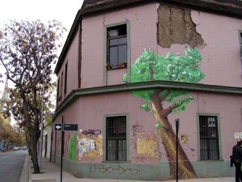
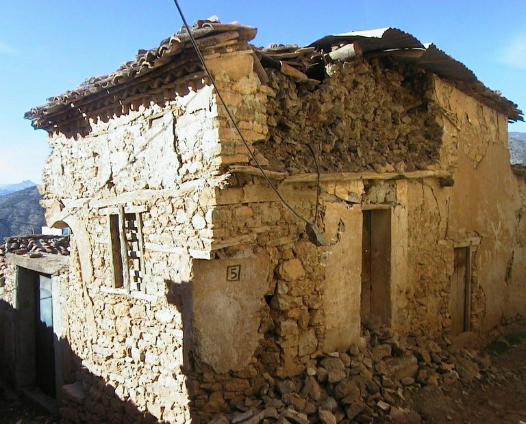

Wood-reinforced [RW]
Masonry walls that are reinforced against earthquake forces by horizontal, vertical, and/or diagonal wood members. The wood reinforcement might consist of wood bond beams at eaves level to tie walls together or may be vertical posts attached to walls to reduce the amount of earthquake damage.

Rubble stone masonry in mud mortar with timber bands (local name: Bhatar), NWFP, Pakistan (J. Bothara)

Adobe building with a wood bond beam at eaves level, Peru (M. Blondet)

Dhajji Dewari construction in Kashmir, India (D. Rai)


"Pombalino" buildings in Lisbon, Portugal are historic masonry buildings with wooden bracing members; these buildings were built after the devastating 1755 earthquake (refer to World Housing Encyclopedia Report 92 for more information)



Wood reinforced adobe buildings can be found in Chile (tabiquería de madera rellena de adobe). The photo at the top shows a building in Santiago (note the exposed wall portion) and the bottom photos shows a building in Cauquenes damaged in the 2010 Maule earthquake (S. Brzev and M. Astroza)

Wood-reinforced stone masonry, Algeria (M. Farsi)